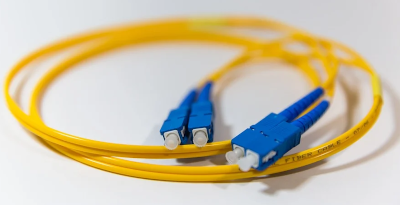
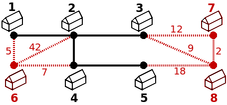
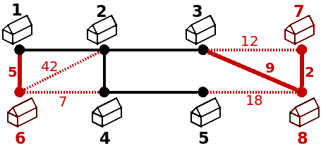

Para efeitos da nota atribuida à resolução de exercícios ao longo do semestre - Submeter até 23:59 de 3 de Janeiro
(o problema continuará depois disponível para submissão, mas sem contar para a nota)
És o responsável pela instalação de fibra ótica da Dados Autênticos e Anónimos (DAA), o Internet service provider mais conhecido do país. Tens a teu cargo a decisão de como passar os cabos para ligar à rede da DAA as novas casas, de modo a minimizar os custos para a empresa.
A figura seguinte exemplifica um processo. A preto estão as casas que já usufruem do serviço das DAA e os cabos já instalados (sendo garantido que as casas a preto foram um único componente conexo). A vermelho estão as casas que querem passar a ter fibra da DAA, sendo que a tracejado estão as possíveis novas ligações e o custo associado a cada uma.

O teu objectivo é conseguir ligar todas as casas à rede já existente, de modo a que todas as casas passem a fazer parte do mesmo componente, gastando a menor quantia possível. Para isso podes apenas decidir passar cabo em algumas das ligações a tracejado, de modo a minimizar a soma das ligações que usaste. Para a figura anterior, a solução passava por usar as ligações de custo 5, 9 e 2, para um custo total de 16 (5+9+2):

Dado um conjunto de casas já ligadas, um conjunto de casas a ligar e um conjunto de ligações possíveis e respetivos custos, a tua tarefa é determinar qual o menor custo possível para colocar todas as casas na nova rede, quais ligações deves usar para isso.
A primeira linha contém três inteiro A B C, respetivamente o número A de casas já na rede, o número B de casas a adicionar a rede e o número C de possiveis novas ligações. É garantido que as A casas já existentes estão ligadas num único componente conexo e que são identificadas por inteiros consecutivos de 1 a A. As B casas a adicionar são identificadas por inteiros consecutivos de A+1 a A+B.
Seguem-se C linhas no formato x y p, cada uma indicando uma possível ligação com custo p entre as casas x e y. É garantido que é possível usar as ligações para ligar todas as novas casas à rede já existente. As ligações não têm direção associada.
Na primeira linha deve vir o menor custo possível para ligar todas as novas casas à rede, como atrás indicado. Na segunda linha devem vir B inteiros indicando os custos da ligações usadas (separados por um espaço). Estes custos devem vir por ordem crescente, e se existir mais que uma solução de igual custo mínimo, pode imprimir qualquer uma dessas soluções.
São garantidos os seguintes limites em todos os casos de teste que irão ser colocados ao programa:
| 1 ≤ A ≤ 20 000 | Número de casas já na rede | |
| 1 ≤ B ≤ 20 000 | Quantidade de casas a adicionar | |
| B ≤ C ≤ 40 000 | Quantidade de possíveis novas ligações | |
| 1 ≤ x,y ≤ A+B | Casas de uma ligação | |
| 1 ≤ p ≤ 40 000 | Custo de uma ligação |
5 3 7 1 6 5 2 6 42 4 6 7 7 3 12 8 7 2 8 5 18 8 3 9
16 2 5 9
O exemplo de input corresponde ao exemplo do enunciado (sendo que as ligações a preto, as já existentes, não são dadas, por não serem relevantes para o problema).
Desenho e Análise de Algoritmos (CC2001)
DCC/FCUP - Faculdade de Ciências da Universidade do Porto